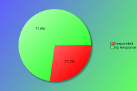
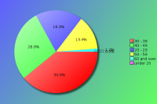
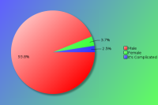
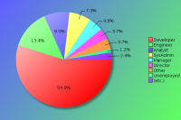
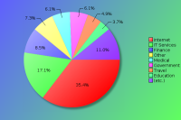
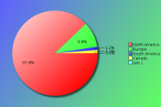

YAPC::NA 2014 - Survey Results
The following survey results are a simple presentation of the raw data.
No attempt has been made to analyse the data and compare with previous
years. See forthcoming PDFs for more in depth analysis.
Click on pie charts to view larger image version.
Demographics
These questions will help us understand who our attendees are.
Attendees:

| Count | Description |
|---|
| 82 | Responded |
| 219 | No Response |
| 301 | Total |
| 27 | Response Percentage |
Age Band:

| Count | Description |
|---|
| 0 | under 20 |
| 15 | 20 - 29 |
| 32 | 30 - 39 |
| 23 | 40 - 49 |
| 11 | 50 - 59 |
| 1 | 60 and over |
Gender:
Although this question is optional, with your help we would like to monitor changes in attendance over time.

| Count | Description |
|---|
| 76 | Male |
| 3 | Female |
| 2 | It's Complicated |
Job Type:

| Count | Description |
|---|
| 3 | CEO/Company Director/Senior Manager |
| 0 | Non-Technical Manager |
| 4 | Technical Manager |
| 7 | Technical Architect/Analyst |
| 45 | Developer |
| 11 | Engineer |
| 6 | SysAdmin |
| 1 | Student |
| 0 | Lecturer/Teacher/Trainer |
| 1 | Human Resources |
| 0 | Researcher |
| 1 | Unemployed |
| 3 | Other |
If your position covers many roles, please base this on your most senior responsibility. Also base this on the role you perform, rather than your job title. For example, a 'QA Developer' would be a 'Developer' role, and 'Information Manager' would a Manager role (Technical or Non-Technical depending upon your responsibilites)
If 'Other' please enter your professional job role or title:
- Data Analyst
- polyglot
- Programmer Analyst
- Technical Lead
Industry:

| Count | Description |
|---|
| 0 | Automotive |
| 3 | Education |
| 2 | Engineering |
| 7 | Finance |
| 5 | Government |
| 14 | IT Services |
| 29 | Internet/Web |
| 1 | Legal |
| 1 | Logistics |
| 2 | Media/Entertainment |
| 5 | Medical/Healthcare |
| 1 | Property |
| 1 | Research |
| 0 | Retail |
| 0 | Telecommunications |
| 4 | Travel |
| 1 | Unemployed |
| 6 | Other |
If you or your company undertake work within mulitple industry sectors, please select the primary one you are currently working within.
If 'Other' please enter your industry sector:
- Biotech
- Cosmetics
- Geology
- Hospitality
- Insurance
Region:

| Count | Description |
|---|
| 72 | North America |
| 1 | Canada |
| 1 | South America |
| 8 | Europe |
| 0 | Asia |
| 0 | Australaisa |
| 0 | Africa |
Please note this is the region you were a resident in, prior to attending the conference.
The Perl Community, YAPCs & Workshops
These questions are designed to help us understand our attendees level of involvement in the Perl community.
How do you rate your Perl knowledge?
| Count | Description |
|---|
| 6 | Beginner |
| 31 | Intermediate |
| 45 | Advanced |
How many previous YAPCs have you attended?
| Count | Description |
|---|
| 23 | This was my first YAPC |
| Attended YAPCs | 1 | 2 | 3 | 4 | 5 | 6 | 7 | 8 | 9 | 10 | 11 | 12 | 13 | 14 | 15 | total |
|---|
| YAPC::NA | 19 | 10 | 7 | 6 | 4 | 2 | - | 1 | - | 1 | 1 | 1 | 1 | - | 2 | 200 |
| YAPC::Europe | 4 | 3 | 1 | 2 | - | - | - | - | 1 | - | 1 | - | - | - | - | 41 |
| YAPC::Asia | 2 | - | - | - | - | - | - | - | - | - | - | - | - | - | - | 2 |
| YAPC::Australia / OSDC::Australia | 1 | - | - | - | - | - | - | - | - | - | - | - | - | - | - | 1 |
| YAPC::SA / YAPC::Brazil | - | - | - | 1 | - | - | - | - | - | - | - | - | - | - | - | 4 |
How many Perl Workshops have you attended?
| Count | Description |
|---|
| 40 | Never attended one |
| Attended Workshops | 1 | 2 | 3 | 4 | 5 | 6 | 7 | 8 | 9 | 10 | ... | 19 | 20 | total |
|---|
| Pittsburgh Perl Workshop | 11 | 2 | 3 | - | - | 2 | - | - | - | - | ... | - | - | 36 |
| Frozen Perl Workshop | 5 | 1 | 1 | - | - | - | - | - | - | - | ... | - | - | 10 |
| Perl Oasis Workshop | 2 | 4 | 3 | - | - | - | - | - | - | - | ... | - | - | 19 |
| DC / Baltimore Perl Workshop | 6 | 1 | 4 | - | - | - | - | - | - | - | ... | - | - | 20 |
| any European Perl Workshops | 3 | 1 | - | - | 1 | - | 1 | 1 | - | - | ... | - | 1 | 45 |
| Other Perl Workshops | - | 1 | 2 | - | 1 | - | - | - | - | - | ... | - | - | 13 |
Do you plan to attend a future YAPC/Workshop?
| Count | Description |
|---|
| 64 | Yes |
| 10 | Maybe |
| 4 | Don't Know |
| 2 | No |
If no, could you tell us why?
Particularly if this is your first YAPC, we would like to understand why you would not be able or interested in attending another event like it.
- I'm not really a fan of Perl, though Perl 6 looks like it cleans up some of Perl 5's problems. It's too bad the community appears to have reached consensus that there's no upgrade path between them and that Perl 6 leaves so many problems un-addressed.
I just find working with Perl frustrating as I know enough languages to know that there are many ways of solving problems and Perl seems to have consistently chosen in favor of less readable syntax and less intuitive interfaces to common functionality.
I'm going to end this here, because I don't want to spend all night ranting in this little box.
- I've gone three times now and while it's interesting, I don't think it's interesting enough to warrant being there in person. I believe I could watch the talks via youtube and get the same value out of that part of the conference, and step aside to let other members of my team go instead who are fare more interested in the social aspect of meeting other developers and industry people.
- It was a good experience & I learned a lot.
- Only reason I miss most of them is travel cost.
Are you a member of a local Perl Mongers user group?
| Count | Description |
|---|
| 44 | Yes |
| 36 | No |
If not, do you plan to find one or start one?
| Count | Description |
|---|
| 5 | Yes |
| 16 | Maybe |
| 8 | Don't Know |
| 9 | No |
What other areas of the Perl Community do you contribute to?
| Count | Description |
|---|
| 37 | I'm a CPAN Author |
| 5 | I'm a CPAN Tester |
| 3 | I'm a board or committee member of a recognised Perl body (e.g. TPF, EPO, YEF, JPF, etc) |
| 14 | I'm a Perl project developer (e.g. Rakudo, Catalyst, Dancer, Padre, etc) |
| 19 | I have a technical blog (e.g. on blogs.perl.org or a personal blog) |
| 19 | I use or contribute to PerlMonks or other Perl forums |
| 37 | I use IRC (e.g. #perl, #yapc, or #london.pm) |
| 15 | I contribute to Perl mailing lists (e.g. P5P, Perl QA, etc) |
| 6 | other ... |
If 'Other' please enter your area of contribution
- For whatever reason, I'm too scared to contribute to public Perl projects for the most part, possibly due to the strong personalities within the Perl community.
- Gong
- I don't contribute
- I just use Perl
- Perl Release Manager
- Teach basic Perl at my company. Make annual monetary donations to TPF.
YAPC::NA 2014
Regarding YAPC::NA 2014 in Orlando, FL specifically, please answer the following as best you can.
When did you decide to come to this conference?
| Count | Description |
|---|
| 33 | I'm now a regular YAPC::NA attendee |
| 11 | After YAPC::NA 2013 in Austin, TX |
| 2 | After reading a YAPC::NA blog post |
| 0 | After joining the Facebook event group |
| 8 | I was nominated to attend by manager/colleague |
| 8 | I was recommended to attend by friend/colleague |
| 4 | After seeing a link or advert on a Perl specific website |
| 0 | After seeing a link or advert on a non-Perl website |
| 1 | After reading an email sent to a mailing list I was in |
| 1 | After seeing other promotions online/in the press |
| 9 | other ... |
If 'Other', what else helped you decide?
- after finally getting management approval to go
- After seeing online videos of previous YAPC::NA.
- Always wanted to go, finally got the chance
- Bought tix 4 yrs in a row. 1st time attending.
- I wanted to for a long time
- Most of our perl people go every year.
- not sure... always wanted to go
- When they accepted my talk.
Were you a speaker?
| Count | Description |
|---|
| 44 | No |
| 9 | No, but I have spoken before at similar conferences |
| 18 | Yes, and I have spoken before at similar conferences |
| 8 | Yes, and it was my first time as a speaker |
Note that "similar conferences" includes other YAPCs, as well as Linux, Open Source or large technical events such as workshops.
If you were a speaker, would you have been able to attend if you hadn't been speaking?
| Count | Description |
|---|
| 23 | Yes |
| 5 | No |
If you weren't a speaker, would you consider speaking at a future conference?
| Count | Description |
|---|
| 33 | Yes |
| 7 | No |
| 19 | Ask me later |
What was your motivation for coming?
| Count | Description |
|---|
| 26 | the list of speakers |
| 35 | the quality of the talks scheduled |
| 19 | to be a speaker |
| 51 | to meet with Perl/project co-contributors |
| 62 | to socialise with Perl geeks |
| 17 | to meet Larry Wall |
| 19 | to visit Orlando, FL |
| 9 | other ... |
If 'Other', what else motivated you to attend?
- Every so often I need a jolt of positive energy to keep going.
- Hardware Hackathon
- learn more about perl
- Most of our perl people go every year.
- Pre/Post Conference Training
- Recruitement
- Team Building
- To connect with the Perl community
- To get an autograph from Charles Stross.
- trainings
What aspects of the conference do you feel gave value for money?
| Count | Description |
|---|
| 71 | the talks / speakers |
| 5 | the conference bag |
| 16 | the tshirt |
| 10 | the job fair |
| 25 | the conference dinner |
| 18 | the conference venue |
| 11 | the city of Orlando |
| 41 | the hallway track |
| 60 | the attendees |
| 3 | other ... |
If 'Other', what else did you think was value for money?
- I believe for cpanel the biggest value is networking and possible candidates to hire. I personally don't get much out of networking.
- the conference towel - jk lolz
- trainings
Will you wear the YAPC shirt after YAPC?
| Count | Description |
|---|
| 64 | Yes |
| 11 | No |
What kinds of talks would you prefer at future conferences?
| Count | Description |
|---|
| 4 | More beginner level talks |
| 12 | More intermediate level talks |
| 20 | More advanced level talks |
| 29 | It's about right |
| 11 | No preference |
Are there any topics you would specifically like to see featured?
- Advanced NYTProf, full- or half-day on DBIx::Class with non-trivial examples.
- An introduction to the Perl debugger for people who have been too lazy to learn how to use it (with a goal of getting people like me to stop ignoring this valuable tool).
More about Perl internals.
More about XS.
- Contributing to perl core.
- For Perl enthusiasts who are not professional software developers, perhaps a session on how to use GitHub (and even on how to use version control in general), especially including a step-by-step demo on how to contribute a patch.
A session comparing the most popular modules used in a few of the more popular problem domains, and have the presenter make a recommendation as to which ones to use and why.
- I really enjoyed the its not Awesome && !Perl talks that I attended.
- I think more very basic talks would be useful; I'll submit a few talks, in case other people agree.
- I would like to give my web user identity talk as a 1 day course, if possible next year.
- I would like to see more advanced courses in web /oo frameworks/.
- I'd like to see more talks on event-driven scripts. Coro, AnyEvent, and friends. (I use AnyEvent already, but would like to see other takes on how to best use these in Perl)
- Learning from other communities / non-Perl projects. What things are we (python,,ruby, Perl) all solving independently?
- Math/Science, Perl6
- Might be interesting to have a few classes devoted to becoming project contributors.
- More about Perl 6 features, and more talks about various useful modules.
- More guts. More non-web-dev centric stuff.
- More hands on this is how you do something for the community. Set up a testing computer, or set up a CPAN author along with instructions on how to upload their first module.
Opinion: We need some more Perl + Front End interaction talks.
- More on Perl 6 and how to:
1. Get more than toy adoption of it.
2. Create a migration path from Perl 5.
3.
- New features and how-tis / bug fixes with follow on releases of core Perl 5. Get ready type training for Perl 6;
- Perl 6
- Perl interpreter internals
Tradeoffs for performance--speed vs memory
Strategies for migration to newer perls like 5.20
There's lots of Perl interpreter distributions (strawberry, activestate, cygwin, bioperl, ... ) out there that are tailored to specific needs--what are they and why should we use one over another?
RegExp optimization
- PSGI/Plack, more core stuff.
- Purely out of personal interest, I'd love to see more talks on Perl internals, given by trained, cordial speakers, that demystify the internals in such a manner as to lure more developers into the P5P community.
- Talks about non-Perl things - more of that.
- The "Awesome" track was a very nice idea. I love the notion of having more satellite topics touched. Life-skills, other languages, environments, etc.
Did you attend the banquet?
| Count | Description |
|---|
| 51 | Yes |
| 25 | No |
If the banquet was made a separate cost from the conference, would you attend it?
| Count | Description |
|---|
| 41 | Yes |
| 28 | No |
How do you rate the conference?
How would you rate your overall satisfaction of the following areas of the conference?
| Choices | 1 | 2 | 3 | 4 | 5 |
|---|
| Newsletters/Updates | 12 | 19 | 20 | 20 | - |
|---|
| Web site | 16 | 27 | 22 | 9 | - |
|---|
| Registration process | 37 | 31 | 4 | 2 | - |
|---|
| Directions/Maps | 32 | 25 | 4 | 3 | - |
|---|
| Content of the talks | 41 | 30 | 6 | 1 | - |
|---|
| Schedule efficiency | 35 | 33 | 4 | 4 | - |
|---|
| BOFs | 12 | 21 | 8 | 1 | - |
|---|
| Social events | 30 | 33 | 5 | 1 | - |
|---|
| Parking | 12 | 15 | 4 | 6 | - |
|---|
| Facilities | 26 | 31 | 14 | 6 | - |
|---|
| Food service | 29 | 36 | 10 | 3 | - |
|---|
| Accommodation | 35 | 30 | 8 | 3 | - |
|---|
| Staff | 57 | 17 | 3 | - | - |
|---|
| Overall experience | 42 | 31 | 3 | 1 | - |
|---|
| Value for price | 49 | 20 | 3 | 2 | - |
|---|
Key:
1 = Very Satisfied
2 = Somewhat satisfied
3 = Somewhat un-satisfied
4 = Very un-satisfied
5 = N/A
Conference Attendance
In order to help future organisers gauge an appropriate conference fee, how much would you (or your company) have paid for a conference ticket? Feel free to provide an answer for all rates, where corporate rate would be paid for by your company (including a Master Class place), standard rate would be the regular price paid by attendees in paid employment, and lastly the concession rate for anyone who holds proof that they are in fulltime education or are unemployed.
Corporate Rate:
| Count | Fee |
|---|
| 1 | $ 150 |
| 7 | $ 250 |
| 8 | $ 300 |
| 2 | $ 350 |
| 1 | $ 400 |
| 9 | $ 500 |
| 1 | $ 1000 |
Standard Rate:
| Count | Fee |
|---|
| 4 | $ 100 |
| 8 | $ 150 |
| 5 | $ 200 |
| 8 | $ 250 |
| 5 | $ 300 |
| 1 | $ 350 |
| 3 | $ 500 |
Concession Rate:
| Count | Fee |
|---|
| 1 | $ ? |
| 1 | $ 10 |
| 1 | $ 20 |
| 8 | $ 50 |
| 1 | $ 80 |
| 6 | $ 100 |
| 3 | $ 150 |
| 1 | $ 200 |
| 2 | $ 250 |
| 1 | $ 400 |
How much do you estimate is spent per person on a conference?
| Count | Fee |
|---|
| 1 | $ 30 |
| 2 | $ 100 |
| 1 | $ 140 |
| 2 | $ 150 |
| 4 | $ 200 |
| 2 | $ 300 |
| 1 | $ 325 |
| 1 | $ 350 |
| 2 | $ 400 |
| 2 | $ 500 |
| 5 | $ 1000 |
| 1 | $ 1300 |
| 3 | $ 1500 |
Would you pay more for a YAPC if we could exclude sponsorship advertising?
| Count | Description |
|---|
| 12 | Yes |
| 42 | No |
If so, how much?
| Count | Fee |
|---|
| 4 | $ 100 |
| 1 | $ 150 |
| 1 | $ 200 |
| 1 | $ 300 |
| 1 | $ 400 |
| 1 | $ 500 |
| 1 | $ 750 |
How did you pay for the conference fee?
| Count | Description |
|---|
| 15 | N/A - I was a speaker |
| 2 | N/A - I was a sponsor |
| 43 | My company paid |
| 13 | I paid out of my own pocket |
| 0 | I wasn't able to attend |
If your employer didn't send you, did they give you time off to attend?
| Count | Description |
|---|
| 21 | Yes |
| 8 | No |
Does distance prevent you from being able to attend some YAPCs?
| Count | Description |
|---|
| 20 | Yes |
| 35 | No |
What area of the US would make it easier for you to attend?
| Count | Description |
|---|
| 16 | New England (Connecticut, Maine, Massachusetts, New Hampshire, Rhode Island and Vermont) |
| 21 | Mideast (Delaware, District of Columbia, Maryland, New Jersey, New York, and Pennsylvania) |
| 15 | Great Lakes (Illinois, Indiana, Michigan, Ohio, and Wisconsin) |
| 8 | Plains (Iowa, Kansas, Minnesota, Missouri, Nebraska, North Dakota, and South Dakota) |
| 12 | Southeast (Alabama, Arkansas, Florida, Georgia, Kentucky, Louisiana, Mississippi, North Carolina, South Carolina, Tennessee, Virginia, and West Virginia) |
| 16 | Southwest (Arizona, New Mexico, Oklahoma, and Texas) |
| 10 | Rocky Mountain (Colorado, Idaho, Montana, Utah, and Wyoming) |
| 8 | Far West (Alaska, California, Hawaii, Nevada, Oregon, and Washington) |

{kind=link}
{kind=link}
{kind=link}
{kind=link}
{kind=link}
{kind=link}